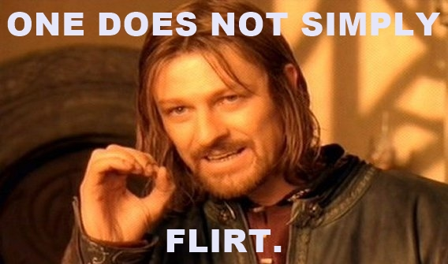

BE YOURSELF
Make a little pause before talking/writing and think. Do you really want to say that racist bad joke? Do you really want to start talking about your job? Is it worth talking about politics? About your ex or just simply... a pause and maybe just expressing how you feel, it´s a nice/cute way to say that you’re having a great time!
Three times, actually. The rule of three is used in screenplays. It’s so the audience knows to pay attention (because it takes most people three times to actually get it). Well, same is true with flirting. The Target (grrrr) needs to be reassured that you actually mean at them.
This is a hard one, especially for us who don’t necessarily tap into the vulnerability element often. Vulnerable does not mean you’re a door mat. It’s just you opening up in an attempt that target (grrr) will feel safe enough to open up too. And when it comes to flirting, a slight show of vulnerability is vital.
BE CAREFUL
This should be common sense, but just in case: think twice before touching the nuts or the watermelons of your date. There is NO flirt in grabbing/touching the buns’ date when you are in the flirting stage.
We all love animals, they are even tasty right? And despite some people eat them... we do love talking about them, it’s a safe place. But if you see yourself in a loop of talking about your pet “wearing costumes” just change the subject, ask about which animal would that person want to be in the next life? About a meaninful documentary?
Don’t even ask if you can touch the hair. The whole idea is wrong, imagine how it sounds from the beginning: “Can I touch your (the victim is panicking...) hair?”. Usually people use a lot of stuff for the hair, the dandruff, alopecia, lices or just too frisky or too straight hair so... shhhts! Don’t touch it!